Inside the Bunsen Burner – Lesespurgeschichte mit Rätselaufgaben auf Englisch (Klasse 9)

Materialpaket Winter für die 9. Klasse: 5 Lesespurgeschichten mit Rätselaufgaben fächerübergreifend (Hungerwinter 1947, Permafrost, Christbaummarkt & mehr)

Die Wärmedämmung – wo das Haus Wärme verliert – Lesespurgeschichte mit Rätselaufgaben (Klasse 9)

Die Novemberrevolution 1918 – vom Kaiserreich zur Demokratie – Lesespurgeschichte mit Rätselaufgaben (Klasse 9)
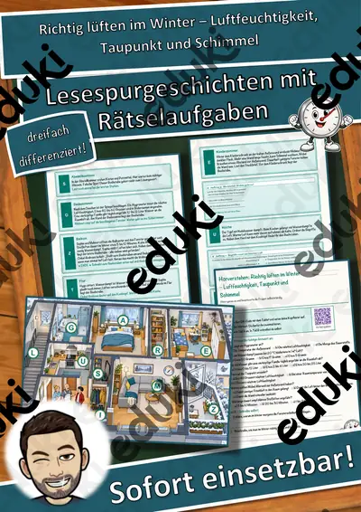
Richtig lüften im Winter – Luftfeuchtigkeit, Taupunkt und Schimmel – Lesespurgeschichte mit Rätselaufgaben (Klasse 9)

Inside an Apple Tree – Lesespurgeschichte mit Rätselaufgaben auf Englisch (Klasse 9)

Der Equal Pay Day – warum Frauen weniger verdienen – Lesespurgeschichte mit Rätselaufgaben (Klasse 9)

Der Hungerwinter 1947 – Leben nach dem Krieg – Lesespurgeschichte mit Rätselaufgaben (Klasse 9)

Kältebus und Wärmestube – Hilfe für wohnungslose Menschen im Winter – Lesespurgeschichte mit Rätselaufgaben (Klasse 9)

Der erste Ferienjob – Jugendarbeitsschutz, Minijob und Lohn – Lesespurgeschichte mit Rätselaufgaben (Klasse 9)

Die Schuldenfalle – Ratenkauf, Handyvertrag und Zahlpause – Lesespurgeschichte mit Rätselaufgaben (Klasse 9)

Der Mietvertrag – die erste eigene Wohnung – Lesespurgeschichte mit Rätselaufgaben (Klasse 9)

Der Ausbildungsvertrag – Probezeit, Urlaub, Rechte und Pflichten – Lesespurgeschichte mit Rätselaufgaben (Klasse 9)

Quali Mathematik Teil A – rechnen ohne Taschenrechner – Lesespurgeschichte mit Prüfungsaufgaben (Klasse 9)

Der Erste Weltkrieg – vom Kriegsbeginn zum Waffenstillstand – Lesespurgeschichte mit Rätselaufgaben (Klasse 9)

Abschied und Trauer – wie Menschen ihrer Toten gedenken – Lesespurgeschichte mit Rätselaufgaben (Klasse 9)

Die Bewerbung – Anschreiben, Lebenslauf, Vorstellungsgespräch – Lesespurgeschichte mit Rätselaufgaben (Klasse 9)
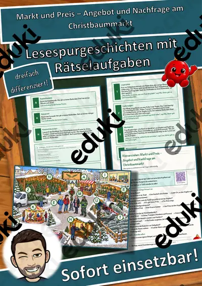
Markt und Preis – Angebot und Nachfrage am Christbaummarkt – Lesespurgeschichte mit Rätselaufgaben (Klasse 9)

Roboter in der Fabrik – Automatisierung und Arbeit – Lesespurgeschichte mit Rätselaufgaben (Klasse 9)

Die Cloud – Daten im Rechenzentrum – Lesespurgeschichte mit Rätselaufgaben (Klasse 9)

Phishing und Betrug im Netz erkennen – Lesespurgeschichte mit Rätselaufgaben (Klasse 9)

Verschlüsselung – vom Caesar-Code zum Schloss im Browser – Lesespurgeschichte mit Rätselaufgaben (Klasse 9)

Tabellenkalkulation – Zellen, Formeln, Diagramme – Lesespurgeschichte mit Rätselaufgaben (Klasse 9)

Künstliche Intelligenz – wie Maschinen aus Beispielen lernen – Lesespurgeschichte mit Rätselaufgaben (Klasse 9)

Rettungsschwimmen – sicher im Wasser helfen – Lesespurgeschichte mit Rätselaufgaben (Klasse 9)

Sport und Umwelt – Natursport ohne Spuren – Lesespurgeschichte mit Rätselaufgaben (Klasse 9)

Sport und Ernährung – Energie fürs Training – Lesespurgeschichte mit Rätselaufgaben (Klasse 9)

Fitness und Krafttraining – richtig trainieren – Lesespurgeschichte mit Rätselaufgaben (Klasse 9)

Wettkampf und Nervosität – mit Druck umgehen – Lesespurgeschichte mit Rätselaufgaben (Klasse 9)

Musikvideos – wie Bild und Klang zusammenwirken – Lesespurgeschichte mit Rätselaufgaben (Klasse 9)

Komponistinnen – Frauen in der Musikgeschichte – Lesespurgeschichte mit Rätselaufgaben (Klasse 9)

Blues und Gospel – Stimmen der Hoffnung – Lesespurgeschichte mit Rätselaufgaben (Klasse 9)

Die Romantik – Musik der Gefühle – Lesespurgeschichte mit Rätselaufgaben (Klasse 9)

Hip-Hop – Rap, DJ und Beat – Lesespurgeschichte mit Rätselaufgaben (Klasse 9)

Rock ’n’ Roll und Rockmusik – Lesespurgeschichte mit Rätselaufgaben (Klasse 9)

Filmmusik – wie Musik Bilder lenkt – Lesespurgeschichte mit Rätselaufgaben (Klasse 9)

Jazz – Musik aus New Orleans – Lesespurgeschichte mit Rätselaufgaben (Klasse 9)

Künstlerinnen – vergessen und wiederentdeckt – Lesespurgeschichte mit Rätselaufgaben (Klasse 9)

Kunst im öffentlichen Raum – Denkmäler und mehr – Lesespurgeschichte mit Rätselaufgaben (Klasse 9)

Pop Art – Kunst aus dem Alltag – Lesespurgeschichte mit Rätselaufgaben (Klasse 9)

Produktdesign im Alltag – vom Problem zum Prototyp – Lesespurgeschichte mit Rätselaufgaben (Klasse 9)

Street Art und Graffiti – Kunst im Stadtraum – Lesespurgeschichte mit Rätselaufgaben (Klasse 9)

Fotografie – der Bildaufbau – Lesespurgeschichte mit Rätselaufgaben (Klasse 9)

Impressionismus – Malen im Freien – Lesespurgeschichte mit Rätselaufgaben (Klasse 9)

Glauben in Freiheit – Religionsfreiheit und Toleranz – Lesespurgeschichte mit Rätselaufgaben (Klasse 9)

Liebe, Freundschaft, Partnerschaft – was Beziehungen stark macht – Lesespurgeschichte mit Rätselaufgaben (Klasse 9)

Arbeit und Leistung – was macht Arbeit wertvoll? – Lesespurgeschichte mit Rätselaufgaben (Klasse 9)

Sich für den Frieden einsetzen – Lesespurgeschichte mit Rätselaufgaben (Klasse 9)

Fernöstliche Religionen – Lesespurgeschichte mit Rätselaufgaben (Klasse 9)

Das Haus der Grundrechte – Lesespurgeschichte mit Rätselaufgaben (Klasse 9)

Der Landtag – Lesespurgeschichte mit Rätselaufgaben (Klasse 9)

Das Nachrichtenstudio – Lesespurgeschichte mit Rätselaufgaben (Klasse 9)

Das Gericht – Lesespurgeschichte mit Rätselaufgaben (Klasse 9)

Die Bundestagswahl – Lesespurgeschichte mit Rätselaufgaben (Klasse 9)

Der Treibhauseffekt – Lesespurgeschichte mit Rätselaufgaben (Klasse 9)

Der Rost – Lesespurgeschichte mit Rätselaufgaben (Klasse 9)

Der Tafelberg – Lesespurgeschichte mit Rätselaufgaben (Klasse 9)

Der Dynamo – Lesespurgeschichte mit Rätselaufgaben (Klasse 9)

Die Gezeiten – Lesespurgeschichte mit Rätselaufgaben (Klasse 9)

Der Hurrikan – Lesespurgeschichte mit Rätselaufgaben (Klasse 9)

Die Raffinerie – Lesespurgeschichte mit Rätselaufgaben (Klasse 9)

Die DNA – Lesespurgeschichte mit Rätselaufgaben (Klasse 9)

Der Zellkern – Lesespurgeschichte mit Rätselaufgaben (Klasse 9)

Die Seife – Lesespurgeschichte mit Rätselaufgaben (Klasse 9)

Das Mitochondrium – Lesespurgeschichte mit Rätselaufgaben (Klasse 9)

Die Röntgenröhre – Lesespurgeschichte mit Rätselaufgaben (Klasse 9)

Die Leuchtdiode – Lesespurgeschichte mit Rätselaufgaben (Klasse 9)

Die Glasfaser – Lesespurgeschichte mit Rätselaufgaben (Klasse 9)

Der Laser – Lesespurgeschichte mit Rätselaufgaben (Klasse 9)

Die Sonne – Lesespurgeschichte mit Rätselaufgaben (Klasse 9)

Das Rückenmark – Lesespurgeschichte mit Rätselaufgaben (Klasse 9)

Der Salzstock – Lesespurgeschichte mit Rätselaufgaben (Klasse 9)

Der Lautsprecher – Lesespurgeschichte mit Rätselaufgaben (Klasse 9)

Die Neutralisation – Lesespurgeschichte mit Rätselaufgaben (Klasse 9)

Das Riesenrad – Lesespurgeschichte mit Rätselaufgaben (Klasse 9)

Das Galvanisieren – Lesespurgeschichte mit Rätselaufgaben (Klasse 9)

Die Mikrowelle – Lesespurgeschichte mit Rätselaufgaben (Klasse 9)

Der Blitzableiter – Lesespurgeschichte mit Rätselaufgaben (Klasse 9)

Das Gezeitenkraftwerk – Lesespurgeschichte mit Rätselaufgaben (Klasse 9)

Der Permafrost – Lesespurgeschichte mit Rätselaufgaben (Klasse 9)

Das Düngemittelwerk – Lesespurgeschichte mit Rätselaufgaben (Klasse 9)

Das Stahlwerk – Lesespurgeschichte mit Rätselaufgaben (Klasse 9)

Das Elektroauto – Lesespurgeschichte mit Rätselaufgaben (Klasse 9)

Das Betonwerk – Lesespurgeschichte mit Rätselaufgaben (Klasse 9)

Das Stromnetz – Lesespurgeschichte mit Rätselaufgaben (Klasse 9)

Die Kunststoffherstellung – Lesespurgeschichte mit Rätselaufgaben (Klasse 9)

Das Kohlekraftwerk – Lesespurgeschichte mit Rätselaufgaben (Klasse 9)

Der Airbag – Lesespurgeschichte mit Rätselaufgaben (Klasse 9)

Der Staudamm – Lesespurgeschichte mit Rätselaufgaben (Klasse 9)

Das Windrad – Lesespurgeschichte mit Rätselaufgaben (Klasse 9)

Die Rakete – Lesespurgeschichte mit Rätselaufgaben (Klasse 9)

Die Wärmepumpe – Lesespurgeschichte mit Rätselaufgaben (Klasse 9)

Das Erdbeben – Lesespurgeschichte mit Rätselaufgaben (Klasse 9)

Die Korrosion – Lesespurgeschichte mit Rätselaufgaben (Klasse 9)

Der Verbrennungsmotor – Lesespurgeschichte mit Rätselaufgaben (Klasse 9)

Die Bestäubung – Lesespurgeschichte mit Rätselaufgaben (Klasse 9)

Der Kohlenstoffkreislauf – Lesespurgeschichte mit Rätselaufgaben (Klasse 9)

Der Bleiakku – Lesespurgeschichte mit Rätselaufgaben (Klasse 9)

Die Solarzelle – Lesespurgeschichte mit Rätselaufgaben (Klasse 9)

Das Nervensystem – Lesespurgeschichte mit Rätselaufgaben (Klasse 9)

Der Generator – Lesespurgeschichte mit Rätselaufgaben (Klasse 9)

Die Brennstoffzelle – Lesespurgeschichte mit Rätselaufgaben (Klasse 9)

Die Plattentektonik – Lesespurgeschichte mit Rätselaufgaben (Klasse 9)

Der Transformator – Lesespurgeschichte mit Rätselaufgaben (Klasse 9)

Das Lymphsystem – Lesespurgeschichte mit Rätselaufgaben (Klasse 9)

Reiz und Reaktion – Lesespurgeschichte mit Rätselaufgaben (Klasse 9)

Das Hormonsystem – Lesespurgeschichte mit Rätselaufgaben (Klasse 9)

Die Titration – Lesespurgeschichte mit Rätselaufgaben (Klasse 9)

Die Elektrolyse – Lesespurgeschichte mit Rätselaufgaben (Klasse 9)

Der Katalysator – Lesespurgeschichte mit Rätselaufgaben (Klasse 9)

Die Batterie – Lesespurgeschichte mit Rätselaufgaben (Klasse 9)

Die Recyclinganlage – Lesespurgeschichte mit Rätselaufgaben (Klasse 9)

Die Bohrinsel – Lesespurgeschichte mit Rätselaufgaben (Klasse 9)

Die Biogasanlage – Lesespurgeschichte mit Rätselaufgaben (Klasse 9)

Das Tonstudio – Lesespurgeschichte mit Rätselaufgaben (Klasse 9)

Der Tagebau – Lesespurgeschichte mit Rätselaufgaben (Klasse 9)

Die Müllverbrennungsanlage – Lesespurgeschichte mit Rätselaufgaben (Klasse 9)

Die Aluminiumhütte – Lesespurgeschichte mit Rätselaufgaben (Klasse 9)

Die Gießerei – Lesespurgeschichte mit Rätselaufgaben (Klasse 9)

Die Kokerei – Lesespurgeschichte mit Rätselaufgaben (Klasse 9)

Die Leber – Lesespurgeschichte mit Rätselaufgaben (Klasse 9)

Die Photovoltaikanlage – Lesespurgeschichte mit Rätselaufgaben (Klasse 9)

Das Zementwerk – Lesespurgeschichte mit Rätselaufgaben (Klasse 9)

Das Gehirn – Lesespurgeschichte mit Rätselaufgaben (Klasse 9)

Das Kernkraftwerk – Lesespurgeschichte mit Rätselaufgaben (Klasse 9)

Der Kalkkreislauf – Lesespurgeschichte mit Rätselaufgaben (Klasse 9)

Die Nervenzelle – Lesespurgeschichte mit Rätselaufgaben (Klasse 9)

Die Erdölraffinerie – Lesespurgeschichte mit Rätselaufgaben (Klasse 9)

Der Viertaktmotor – Lesespurgeschichte mit Rätselaufgaben (Klasse 9)

Der Hochofen – Lesespurgeschichte mit Rätselaufgaben (Klasse 9)

Die Vererbung – Lesespurgeschichte mit Rätselaufgaben (Klasse 9)

Die Schneiderei – Ein Praktikum beim Schneider – Lesespurgeschichte mit Rätselaufgaben (Klasse 9)

Die Gärtnerei – Ein Praktikum beim Gärtner – Lesespurgeschichte mit Rätselaufgaben (Klasse 9)

Der Malerbetrieb – Ein Praktikum beim Maler – Lesespurgeschichte mit Rätselaufgaben (Klasse 9)

Die Schreinerei – Ein Praktikum beim Tischler – Lesespurgeschichte mit Rätselaufgaben (Klasse 9)

Die Kfz-Werkstatt – Ein Praktikum beim Kfz-Mechatroniker – Lesespurgeschichte mit Rätselaufgaben (Klasse 9)

Der 3D-Druck – In der Technik-Werkstatt – Lesespurgeschichte mit Rätselaufgaben (Klasse 9)

Die Arztpraxis – Ein Praktikum beim Arzt – Lesespurgeschichte mit Rätselaufgaben (Klasse 9)
Die chemische Bindung – Prüfungstraining Chemie (Klasse 9)
Der Rechtsstaat – Prüfungstraining Sozialkunde (Klasse 9)
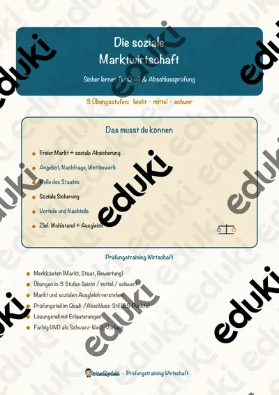
Die soziale Marktwirtschaft – Prüfungstraining Wirtschaft (Klasse 9)
Die Bevölkerungsentwicklung – Prüfungstraining Erdkunde (Klasse 9)
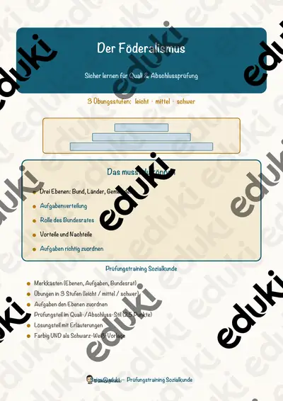
Der Föderalismus – Prüfungstraining Sozialkunde (Klasse 9)

Die Vererbung – Prüfungstraining Biologie (Klasse 9)
Das Immunsystem – Prüfungstraining Biologie (Klasse 9)
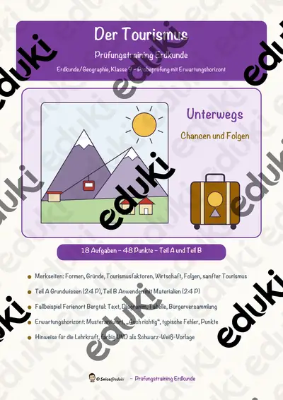
Der Tourismus – Prüfungstraining Erdkunde (Klasse 9)
Die Inflation – Prüfungstraining Wirtschaft (Klasse 9)
Der Elektromotor – Prüfungstraining Physik (Klasse 9)

Die Zellatmung – Prüfungstraining Biologie (Klasse 9)
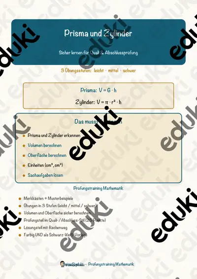
Prisma und Zylinder – Prüfungstraining Mathematik (Klasse 9)
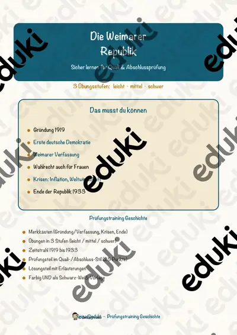
Die Weimarer Republik – Prüfungstraining Geschichte (Klasse 9)
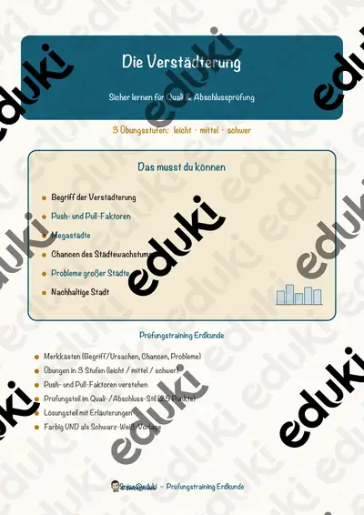
Die Verstädterung – Prüfungstraining Erdkunde (Klasse 9)
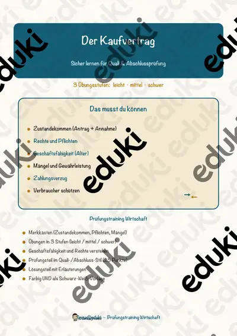
Der Kaufvertrag – Prüfungstraining Wirtschaft (Klasse 9)
Die Radioaktivität – Prüfungstraining Physik (Klasse 9)
Quadratische Funktionen – Prüfungstraining Mathematik (Klasse 9)
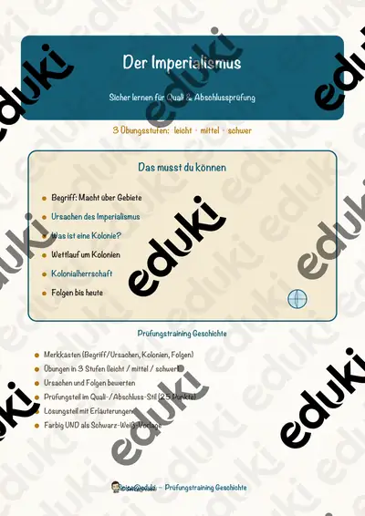
Der Imperialismus – Prüfungstraining Geschichte (Klasse 9)
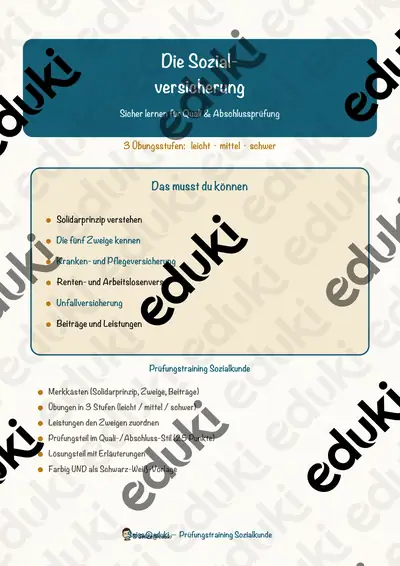
Die Sozialversicherung – Prüfungstraining Sozialkunde (Klasse 9)
Redoxreaktionen – Prüfungstraining Chemie (Klasse 9)
Die Vereinten Nationen – Prüfungstraining Sozialkunde (Klasse 9)

Die Kurzgeschichte – Prüfungstraining Deutsch (Klasse 9)
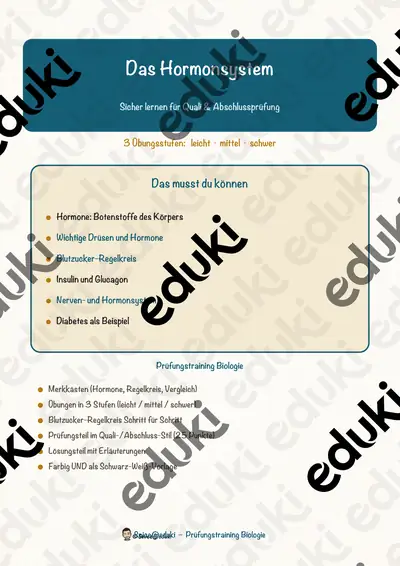
Das Hormonsystem – Prüfungstraining Biologie (Klasse 9)
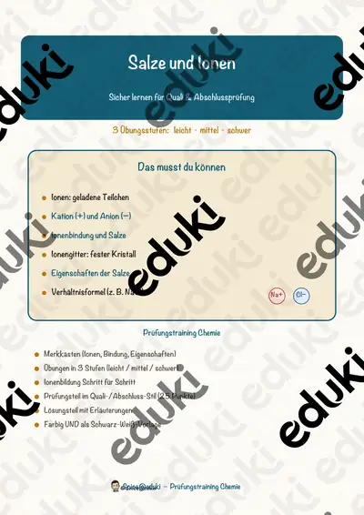
Salze und Ionen – Prüfungstraining Chemie (Klasse 9)
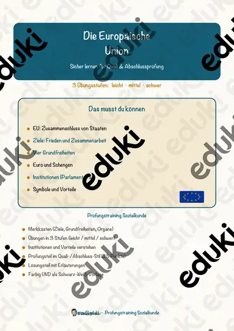
Die Europäische Union – Prüfungstraining Sozialkunde (Klasse 9)
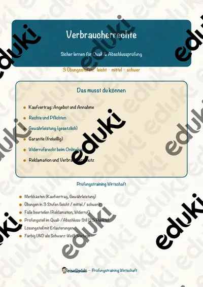
Verbraucherrechte – Prüfungstraining Wirtschaft (Klasse 9)
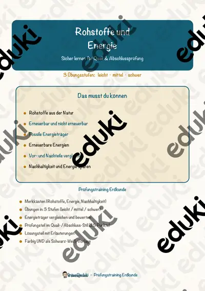
Rohstoffe und Energie – Prüfungstraining Erdkunde (Klasse 9)
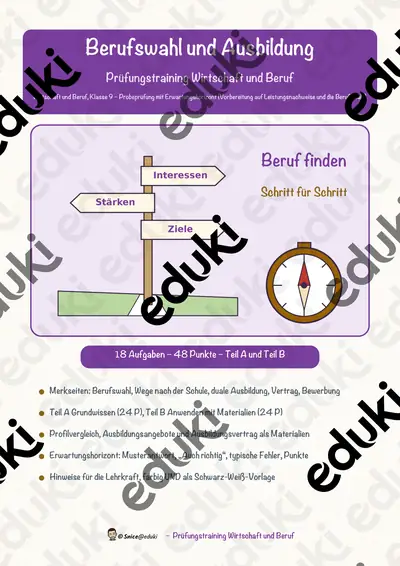
Berufswahl und Ausbildung – Prüfungstraining Wirtschaft (Klasse 9)
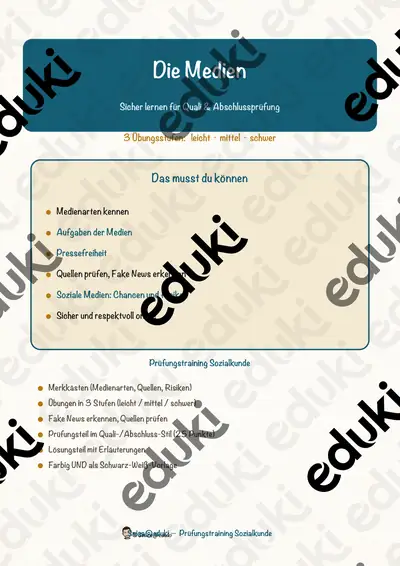
Die Medien – Prüfungstraining Sozialkunde (Klasse 9)
Die Menschenrechte – Prüfungstraining Sozialkunde (Klasse 9)
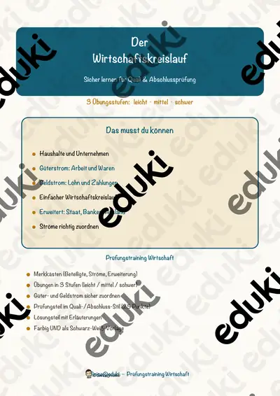
Der Wirtschaftskreislauf – Prüfungstraining Wirtschaft (Klasse 9)
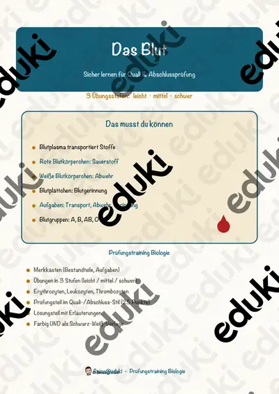
Das Blut – Prüfungstraining Biologie (Klasse 9)
Der Klimawandel – Prüfungstraining Erdkunde (Klasse 9)
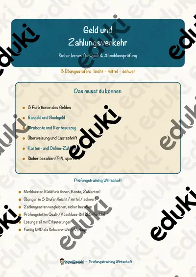
Geld und Zahlungsverkehr – Prüfungstraining Wirtschaft (Klasse 9)
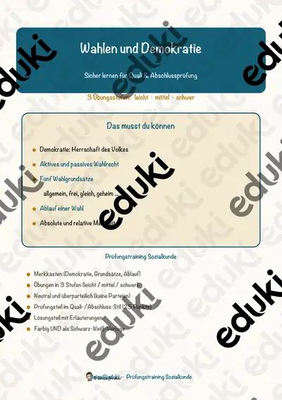
Wahlen und Demokratie – Prüfungstraining Sozialkunde (Klasse 9)
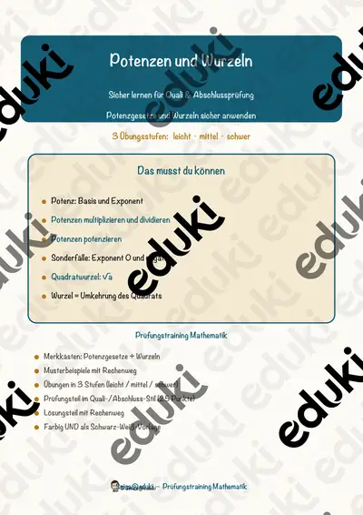
Potenzen und Wurzeln – Prüfungstraining Mathematik (Klasse 9)
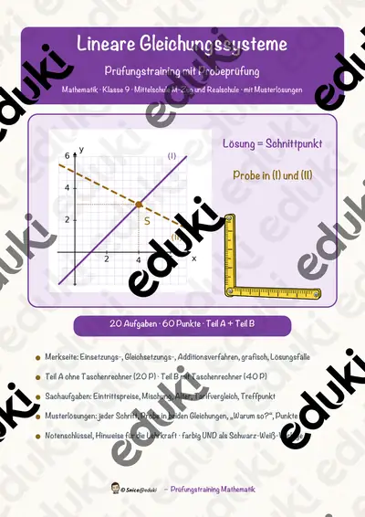
Lineare Gleichungssysteme – Prüfungstraining Mathematik (Klasse 9)

Die Evolution – Prüfungstraining Biologie (Klasse 9)
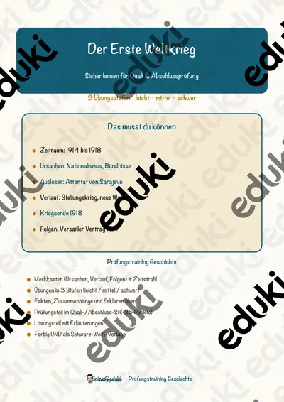
Der Erste Weltkrieg – Prüfungstraining Geschichte (Klasse 9)
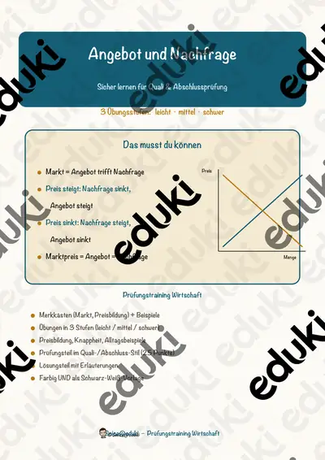
Angebot und Nachfrage – Prüfungstraining Wirtschaft (Klasse 9)
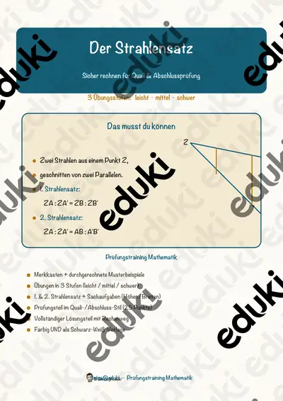
Der Strahlensatz – Prüfungstraining Mathematik (Klasse 9)

Die Sachtextanalyse – Prüfungstraining Deutsch (Klasse 9)
Das Grundgesetz und die Grundrechte – Prüfungstraining Sozialkunde (Klasse 9)
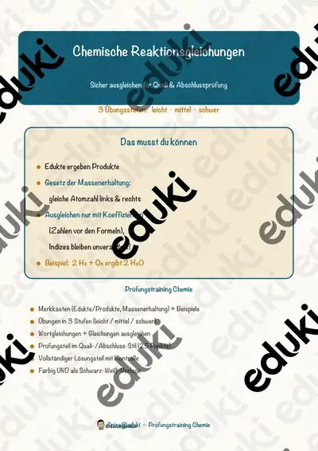
Chemische Reaktionsgleichungen – Prüfungstraining Chemie (Klasse 9)
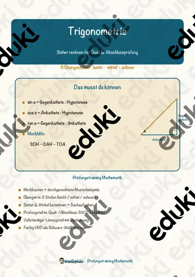
Trigonometrie – Prüfungstraining Mathematik (Klasse 9)
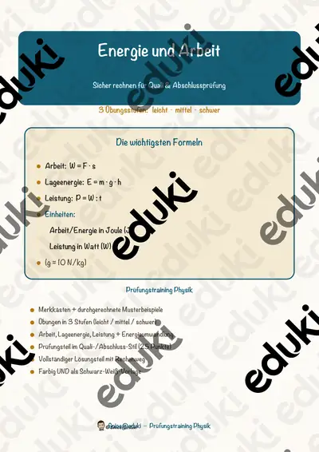
Energie und Arbeit – Prüfungstraining Physik (Klasse 9)

Die Gedichtanalyse – Prüfungstraining Deutsch (Klasse 9)
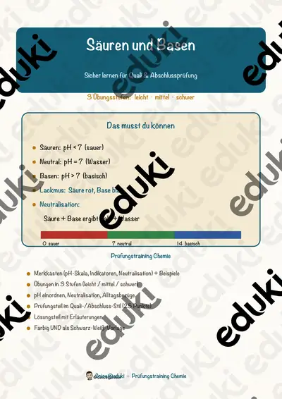
Säuren und Basen – Prüfungstraining Chemie (Klasse 9)
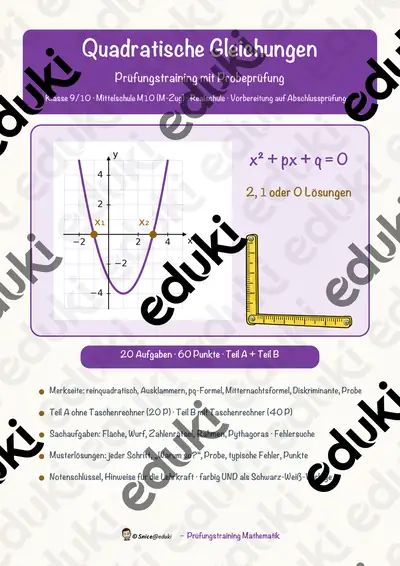
Quadratische Gleichungen – Prüfungstraining Mathematik (Klasse 9)
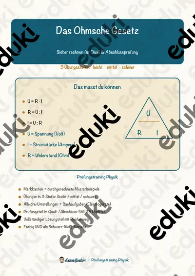
Das Ohmsche Gesetz – Prüfungstraining Physik (Klasse 9)

Die Erörterung – Prüfungstraining Deutsch (Klasse 9)
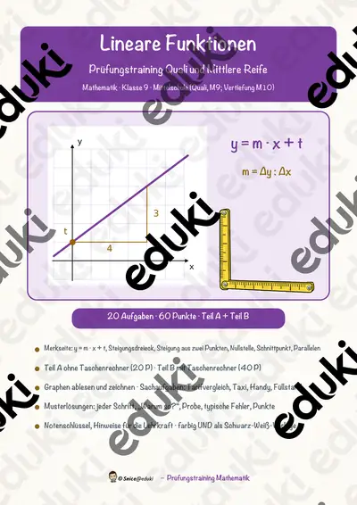
Lineare Funktionen – Prüfungstraining Mathematik (Klasse 9)
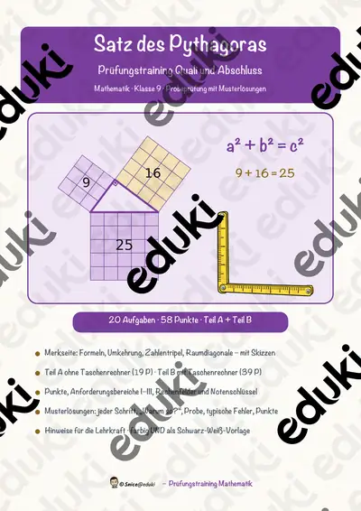
Satz des Pythagoras – Prüfungstraining Mathematik (Klasse 9)
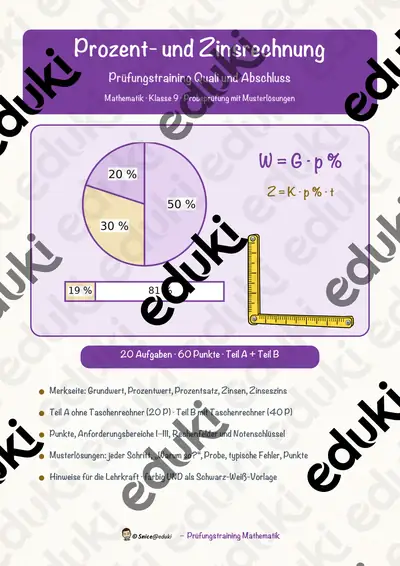
Prozent- und Zinsrechnung – Prüfungstraining Mathematik (Klasse 9)

Weimarer Klassik (Literatur) Lückentext mit Wortspeicher Hörverstehen und Suchsel

Sturm und Drang (Literatur) Lückentext mit Wortspeicher Hörverstehen und Suchsel

Dürre Lückentext mit Wortspeicher Hörverstehen und Suchsel

Hochwasser Lückentext mit Wortspeicher - Naturkatastrophe

Demokratie Lückentext mit Wortspeicher Hörverstehen und Suchsel

Meine erste eigene Wohnung – Lebenspraxis in einfacher Sprache: 3 Niveaus, Rollenspiele, Test

Fächer-Steckbriefe A–Z Klasse 1–10: Baukasten für Lehrkräfte – kostenlos

Lernentwicklungsgespräche Klasse 1–10: Baukasten für Lehrkräfte – kostenlos

Elternabend Klasse 1–10: Baukasten für Lehrkräfte – kostenlos

Bewerbung & Praktikum – Paket Vorstellungsgespräch, Test & Vertrag: 6 Einheiten (Klasse 7–10)

Bewerbung & Praktikum – Paket Bewerbungsunterlagen: 5 Einheiten (Klasse 7–10)

Bewerbung & Praktikum – Paket Praktikum (Berufswahl bis Reflexion): 8 Einheiten (Klasse 7–10)

Praktikumsmappe & Praktikumsbericht – Bewerbung & Praktikum, 3 Stufen, mit Hilfen & Lösungen (Klasse 7–10)
Ausbildungsvertrag Basics – Bewerbung & Praktikum, 3 Stufen, mit Hilfen & Lösungen (Klasse 7–10)
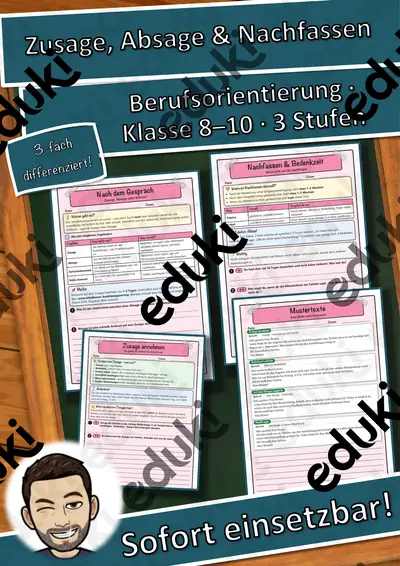
Zusage, Absage & Nachfassen – Bewerbung & Praktikum, 3 Stufen, mit Hilfen & Lösungen (Klasse 7–10)
Assessment-Center – Bewerbung & Praktikum, 3 Stufen, mit Hilfen & Lösungen (Klasse 7–10)

Einstellungstest: Deutsch, Mathe & Logik – Bewerbung & Praktikum, 3 Stufen, mit Hilfen & Lösungen (Klasse 7–10)
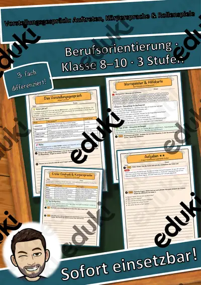
Vorstellungsgespräch: Auftreten, Körpersprache & Rollenspiele – Bewerbung & Praktikum, 3 Stufen, mit Hilfen & Lösungen (Klasse 7–10)
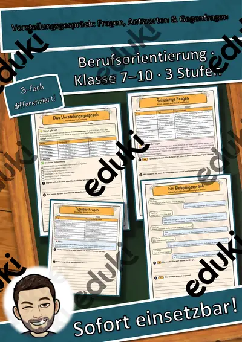
Vorstellungsgespräch: Fragen, Antworten & Gegenfragen – Bewerbung & Praktikum, 3 Stufen, mit Hilfen & Lösungen (Klasse 7–10)

Online-Bewerbung – Bewerbung & Praktikum, 3 Stufen, mit Hilfen & Lösungen (Klasse 7–10)
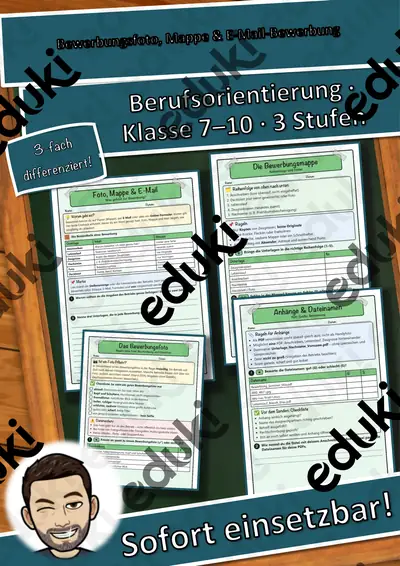
Bewerbungsfoto, Mappe & E-Mail-Bewerbung – Bewerbung & Praktikum, 3 Stufen, mit Hilfen & Lösungen (Klasse 7–10)

Lebenslauf: tabellarisch, Lücken, Layout – Bewerbung & Praktikum, 3 Stufen, mit Hilfen & Lösungen (Klasse 7–10)
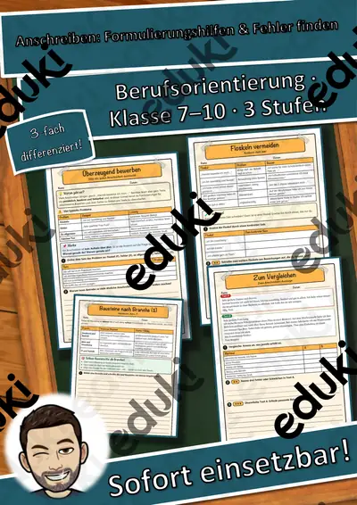
Anschreiben: Formulierungshilfen & Fehler finden – Bewerbung & Praktikum, 3 Stufen, mit Hilfen & Lösungen (Klasse 7–10)
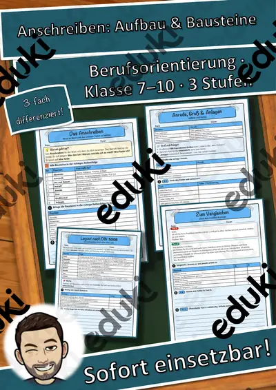
Anschreiben: Aufbau & Bausteine – Bewerbung & Praktikum, 3 Stufen, mit Hilfen & Lösungen (Klasse 7–10)
Praktikumsreflexion – Bewerbung & Praktikum, 3 Stufen, mit Hilfen & Lösungen (Klasse 7–10)
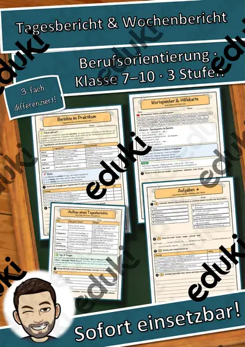
Tagesbericht & Wochenbericht – Bewerbung & Praktikum, 3 Stufen, mit Hilfen & Lösungen (Klasse 7–10)
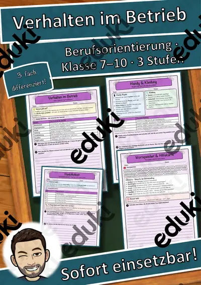
Verhalten im Betrieb – Bewerbung & Praktikum, 3 Stufen, mit Hilfen & Lösungen (Klasse 7–10)

Arbeitsschutz & Jugendarbeitsschutzgesetz – Bewerbung & Praktikum, 3 Stufen, mit Hilfen & Lösungen (Klasse 7–10)

Bewerbung um einen Praktikumsplatz – Bewerbung & Praktikum, 3 Stufen, mit Hilfen & Lösungen (Klasse 7–10)

Praktikumsplatz finden & Telefonat mit dem Betrieb – Bewerbung & Praktikum, 3 Stufen, mit Hilfen & Lösungen (Klasse 7–10)

Berufswahl: Interessen & Stärken-Check – Bewerbung & Praktikum, 3 Stufen, mit Hilfen & Lösungen (Klasse 7–10)

Klassenarbeitstrainer Mathematik Klasse 9 – Quadratische Funktionen und Pythagoras

Quali Mathematik 9 Probeprüfung Teil A und B mit Lösungen, Mittelschule Bayern

ESA Mathematik Klasse 9: Probeprüfung mit Alltagsaufgaben, Teil A und B, mit Lösungen

Bemaßung nach Norm – Technisches Zeichnen Klasse 8/9 Mittelschule – Arbeitsheft mit Lösungen

Zinsrechnung Mindmap + 4 Arbeitsblätter mit Lösungen + Lernvideo (QR) – Zinsen, Zinssatz, Kapital & Monatszinsen

Materialpaket Drogen - Drogenprävention - Steckbriefe Drogen

Steckbrief Droge Vape ohne Nikotin – Drogenprävention

Steckbrief Droge Snus – Drogenprävention

Steckbrief Droge Psilocybin – Drogenprävention

Steckbrief Droge Meth – Drogenprävention

Steckbrief Droge Khat – Drogenprävention

Steckbrief Droge Ketamin – Drogenprävention

Steckbrief Droge Haschisch – Drogenprävention

Steckbrief Droge GHB-GBL – Drogenprävention

Steckbrief Droge Energydrink – Drogenprävention

Steckbrief Droge DXM – Drogenprävention

Steckbrief Droge Alkohol – Drogenprävention
Keine Materialien gefunden – versuch einen anderen Suchbegriff oder Filter.